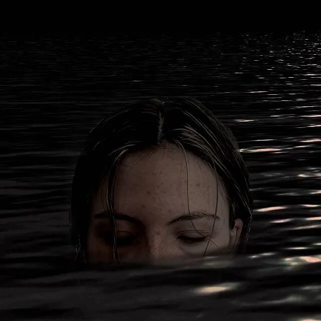

Our Projects

Pretty Babies
IN POST-PRODUCTION
Two teenage girls run away to Hollywood to chase their dreams of becoming famous actresses. Their pursuit leads them into prostitution, trapping them in the dark underbelly of the sex work industry as they journey from Texas to California.

Run Away Amy
IN POST-PRODUCTION
Run Away Amy is a feature-length documentary that follows an extraordinary woman named Amy Bright and her family over the course of two decades as she takes her sexual assault case through the justice system and years later, finds peace when she becomes a marathon runner.
This story of resilience, family, and healing spans two decades, featuring candid, intimate footage of Amy and her family as they document their own journey of grieving and rebuilding. Through candid footage, video diaries, and deeply personal interviews, the Bright family paints a profound and compelling portrait of the human impact that true crime is rarely able to capture.

My Sundown
IN PRE-PRODUCTION
Mallory Bartlett is dying, but she's not done yet. When she finds out her days are numbered, Mallory begrudgingly returns to her small hometown to plan the perfect party: her own funeral. With the help of her high school friend Chester and his daughter, Mallory finally reconnects with parts of her she thought she'd left behind, including her estranged rock legend father, Henry. As father and daughter confront salty old wounds and reckon with Mallory's mortality, they must become a family while they still can… and find the words to say goodbye.

Mary's Monster
IN DEVELOPMENT
Mary's Monster is a modern take on Mary Shelley's creation of Frankenstein. Here the Monster is her dark passenger, with her from childhood, as she becomes enthralled in the outer limits of gothic tales. The Monster is her alter ego and the exchanges with her and the Monster explore the complexities of human nature and the power of a creative mind. Her greatest fear becomes unleashing her Monster onto the world.

The Dogwood Inn
IN DEVELOPMENT
A disparate group of strangers coincide one night at a motel, each suffering in their own way, each oblivious to the turmoil happening right next door.
A single mother with a secret. A man in the throes of a mid-life crisis. Two teens and a broken-down RV. These colorful characters seemingly have nothing in common other than a key to a room at the Dogwood Inn. Over the course of six episodes, we take an intimate look at the residents of six different rooms, whose lives may be more intertwined than they realize.

Mermaid
COMPLETED
After inheriting an isolated seaside cottage, a young woman finds a stranger washed up on the shore. With no means of getting medical help, she brings the woman back to her cottage and attempts to nurture her back to health. However, as time goes on, it becomes evident that something is deeply wrong with her new guest, even as the two begin to form a connection.